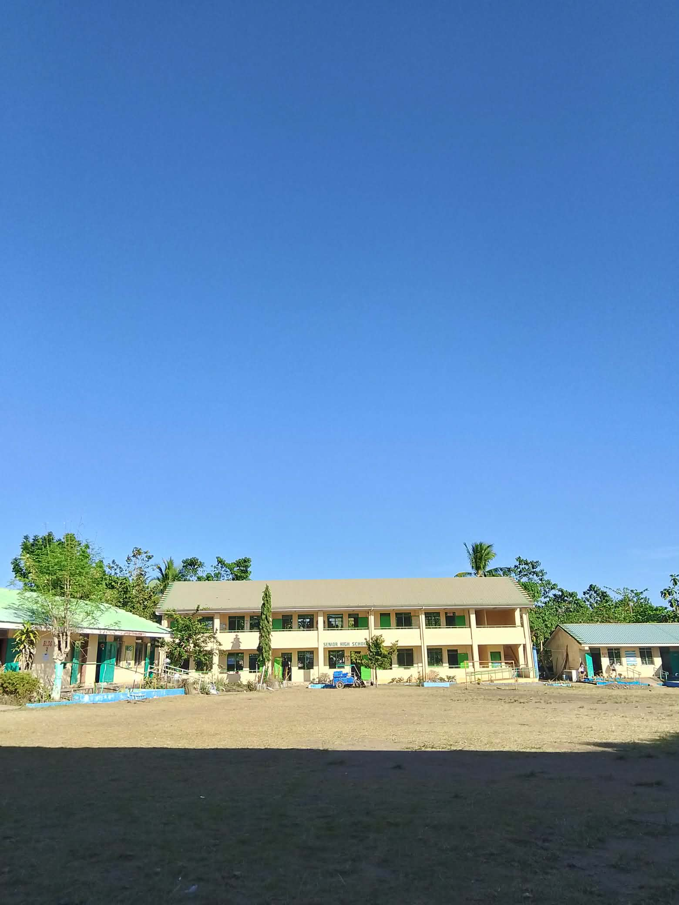
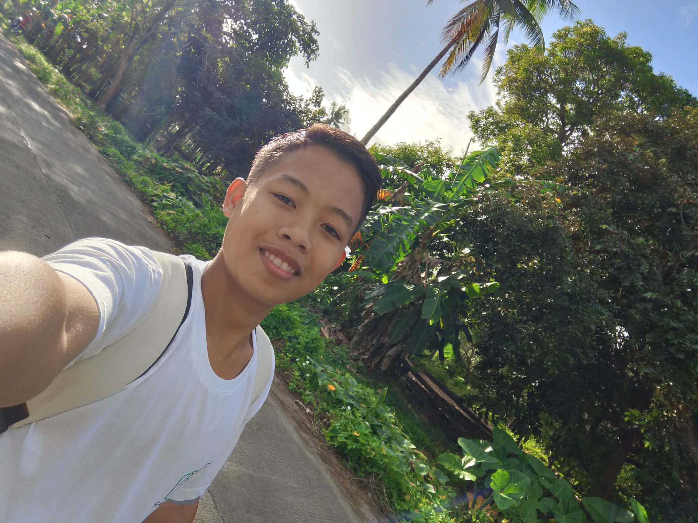
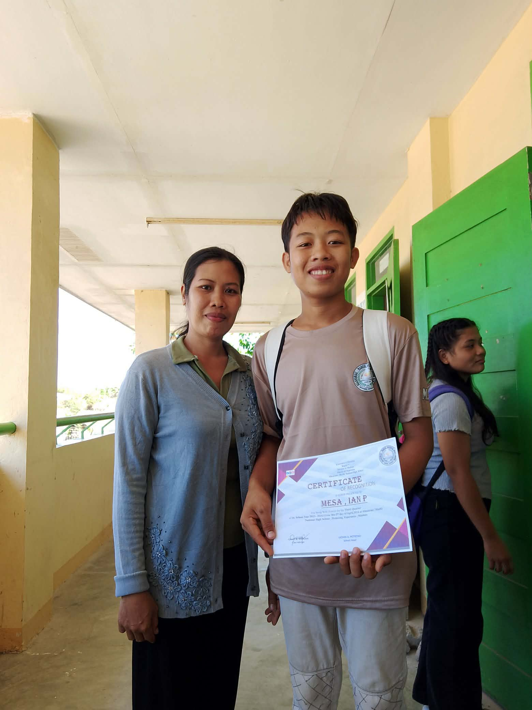
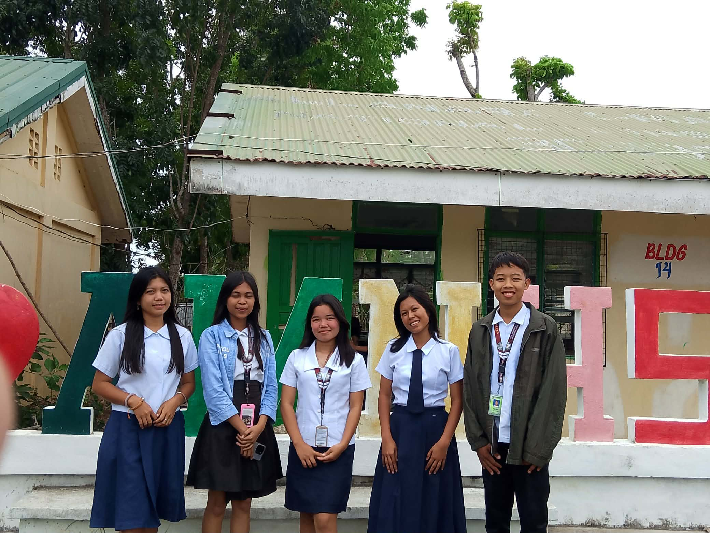
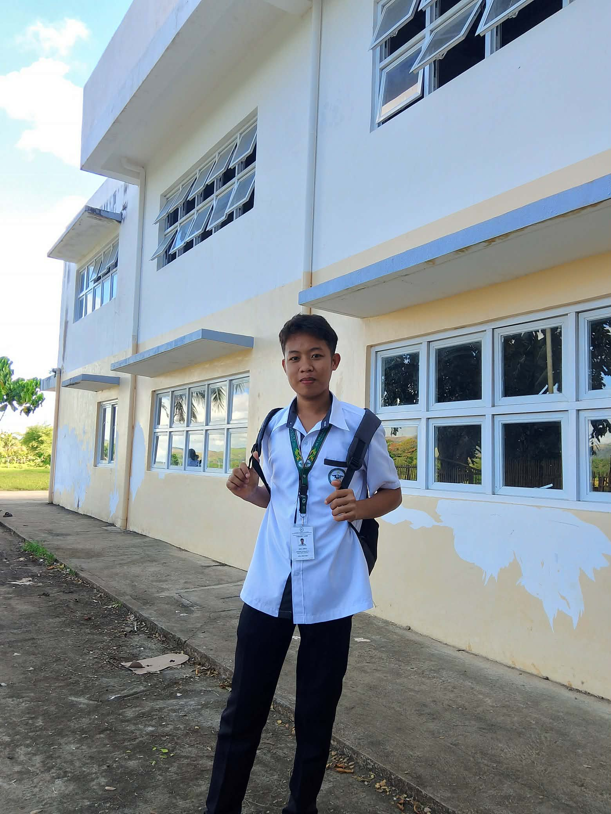
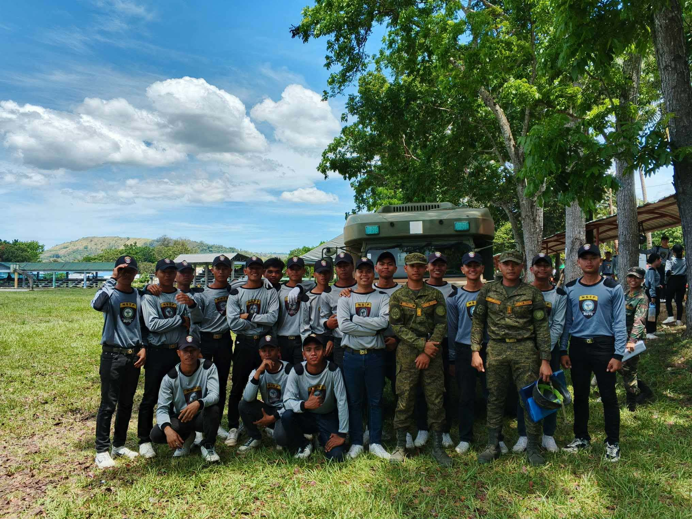
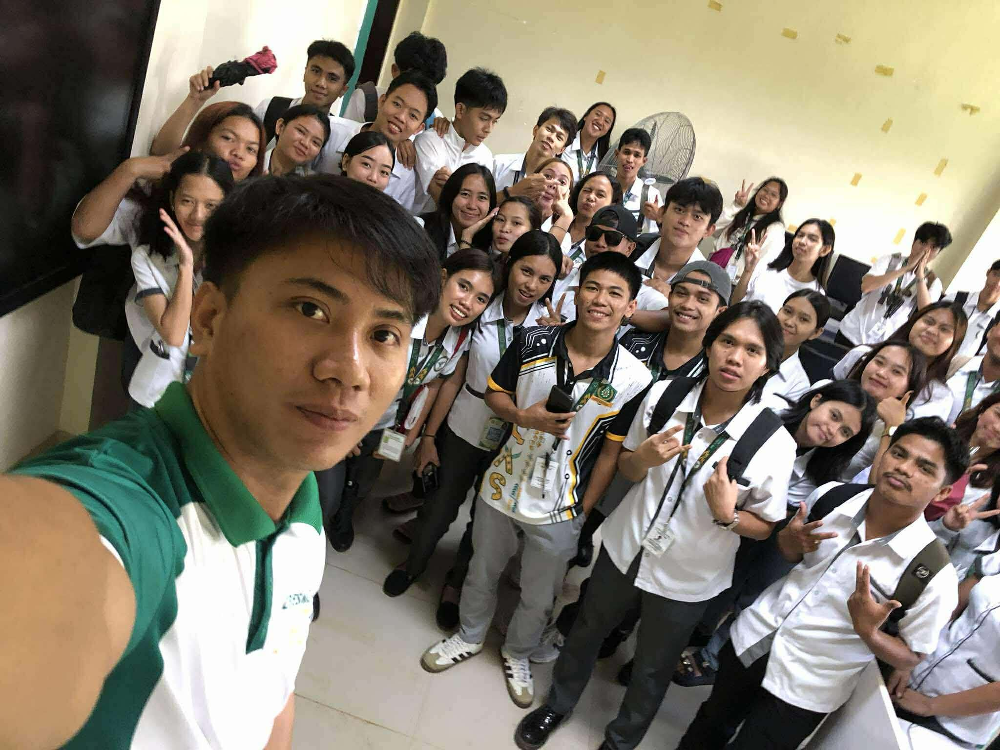

“My journey from senior high school to my second year in college has been a process of growth, challenges, and self-discovery. During my senior high school years, I began building the foundation of who I am today. It was the time when I had to choose my academic strand, face new responsibilities, and start thinking seriously about my future. I experienced pressure from schoolwork and expectations, but through those challenges, I learned how to adapt, manage my time, and understand myself better. It was also where I formed meaningful friendships and slowly developed my confidence.”[cite: 1]
Senior High School
The Foundation



First Year College
The Adjustment

“When I entered my first year of college, everything felt different and more demanding. It was a stage of adjustment where I had to deal with a higher level of academic difficulty and a more independent learning environment. As a BSIS student, I encountered new subjects that challenged my skills and pushed me beyond my comfort zone. There were moments of doubt and struggle, especially when I faced failures or overwhelming workloads. However, these experiences taught me resilience, responsibility, and the importance of perseverance. I learned how to stand on my own and take my studies more seriously.”[cite: 1]
Second Year College
The Growth
“Now that I am in my second year of college, I can see how much I have grown. I have become more familiar with my course and more confident in my abilities. The lessons and skills I am learning are now more practical and aligned with my future career. Although challenges like stress, pressure, and self-comparison still exist, I am now better equipped to handle them. I have learned how to prioritize, stay focused, and continue improving myself. This journey is not easy, but it is shaping me into a stronger and more determined individual, ready to face whatever comes next.”[cite: 1]